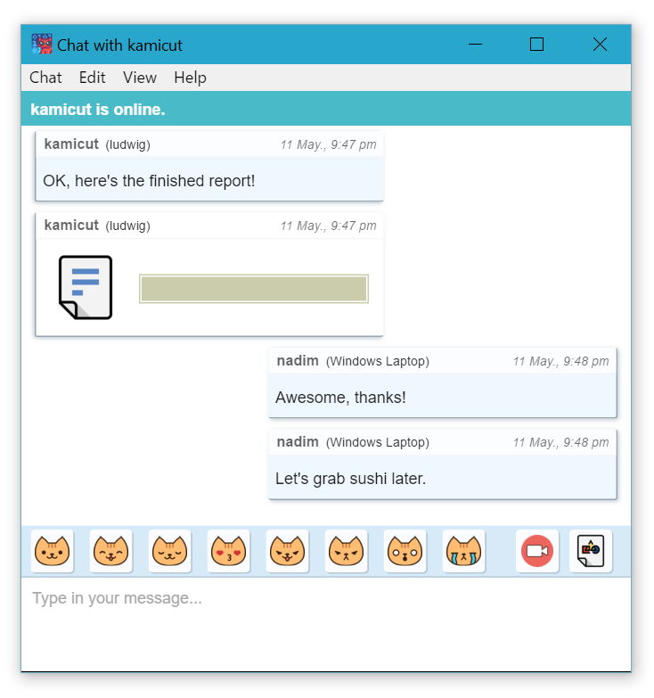

Xatejar en securidad.
Cryptocat és programari lliure amb una simple missió: tothom hauria de ser capaç de xerrar amb els seus amics en la intimitat.
- Xifrat per defecte. Cada missatge té un xifrat, sempre.
- Endavant segur. Xats no es pot desxifrar fins i tot si les claus són robats.
- Intercanvi d'arxius. Compartir arxius de forma segura amb amics.